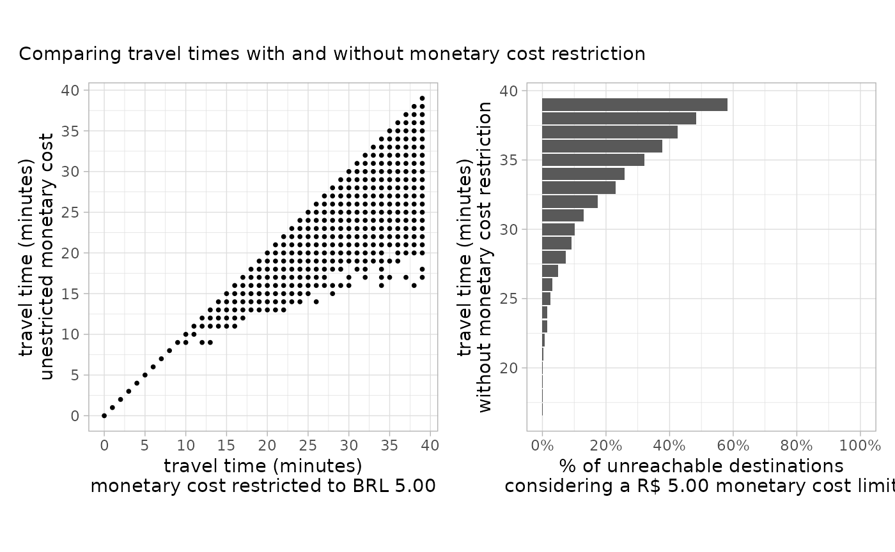

Abstract
This vignette shows how to configure and use custom fare rules in order to account for monetary travel costs when generating travel time matrices and accessibility estimates with ther5r package.
1. Introduction
Considering the monetary costs of public transport trips in the calculation of travel time matrices and accessibility estimates is a major challenge faced by researchers and planning practitioners. Each public transport system can have its own set of rules for calculating fares, with varying levels of complexity. Moreover, there are important trade offs between travel time and monetary costs across multiple trip alternatives and are currently not captured by any multimodal routing engine, except for R5.
R5 has native capabilities and an open architecture for creating and including fare structures in routing models, making it possible to estimate travel time matrices and accessibility estimates simultaneously considering different combinations of time and monetary cost cutoffs. The main challenge, however, is that a specific fare structure for each city needs to be programmed in Java and tightly integrated into R5, making this functionality out of reach for those who do not know how to code in Java (i.e. most of us!).
To help tackle this challenge, r5r has a simple generic
rule-based fare structure that can be configured via a predefined set of
properties and rules that can be set directly from R or using external
tools such as text editors and spreadsheets. This approach currently
available in r5r is able to account for the monetary costs
of public transport systems that follow a simple set of fare rules
according to which the cost of a journey depends on combinations of
modes (see details below).
This vignette shows the features of r5rs fare
structure. It also uses a reproducible example to demonstrate how to
configure the fare structure to account for monetary costs when
generating travel time matrices and accessibility estimates with
r5r.
1.1 Details
A common feature among many public transport services is the
possibility of discounted transfers, when passengers can use a single
ticket for a trip composed of multiple rides sometimes combining
different transport modes. Such trips usually come with a discount in
the second or subsequent fares, as well as a limit on the number of
discounted transfers the user can make and/or a time limit for using
that discount. This is the type of fare structure currently covered by
r5r.
We acknowledge that there are several types fare rules that vary from
one public transport system to another. According to these rules, the
cost of a journey can differ, for example, depending on: different costs
for each trip leg, transport mode or route; distance- or zone-based
fares; different fares for types of riders (e.g elderly people or
students) or time of the day (e.g. peak and off-peak hours); among many
others rules. As such, taking all of these possible rules into
consideration when calculating the monetary cost of multimodal can be
quite difficult. r5r currently does not cover these more
complex fare rules.
The fare calculator currently available in r5r is not
intended to be a robust solution that can take into consideration all
public transport systems and their specific fare rules. That would be a
Herculean task. The features included in r5r’s fare
calculator are inspired by our empirical observations of Brazilian
public transport systems, and is meant to be used mainly in the Access to
Opportunities project. Everyone else is welcome to use it, if the
current features suit their needs.
obs. The GTFS format has some features for specifying public transport fares, but those features are quite limited and are not enough for adequately representing many use cases. A new version of that specification is currently being developed Fares V2, but it may take some time for it to be approved and for transport agencies actually start providing GTFS feeds with full fare information.
2. Reprex: the public transport system of Porto Alegre
In this vignette, we will be using the sample data set for the city
of Porto Alegre (Brazil) included in r5r. Before we start,
we need to increase the memory available to Java and load the packages
used in this vignette
options(java.parameters = "-Xmx2G")
library(r5r)
library(sf)
library(data.table)
library(ggplot2)
library(patchwork)
library(dplyr)
library(h3jsr)Porto Alegre has a relatively straightforward public transport system, where the vast majority of the population that rely on transit ride buses. The city also has a metropolitan rail service that connects the city center to the neighboring northbound municipalities. That system can be seen in the map below.
# setup and load Porto Alegre multimodal network into memory
# system.file returns the directory with example data inside the r5r package
# set data path to directory containing your own data if not using the examples
data_path <- system.file("extdata/poa", package = "r5r")
r5r_core <- setup_r5(data_path)
#> Using cached R5 version from C:\Users\B14912846767\AppData\Local/R/cache/R/r5r/r5_jar_v7.1.0/r5-v7.1-all.jar
#>
#> Using cached network.dat from C:/Users/B14912846767/AppData/Local/Programs/R/R-4.4.2/library/r5r/extdata/poa/network.dat
# load transit network as an SF
transit_network <- transit_network_to_sf(r5r_core)
# map
ggplot() +
geom_sf(data=transit_network$routes, aes(color=mode)) +
theme_void()According to the fare rules in Porto Alegre, as in most Brazilian cities, the cost a a journey depends on a combination of number of subsequent trips and/or transport modes. In the case of Porto Alegre, the fare rules are as follows:
- Each bus ticket costs R$ 4.80.
- Riding a second bus adds R$ 2.40 to the total cost. Subsequent bus rides cost the full ticket price of R$ 4.80.
- Each train ticket costs R$ 4.50. Once a passenger enters a train station, she can take an unlimited amount of train trips as long as she doesn’t leave a station.
- The integrated fare between bus and train has a 10% discount, which totals R$ 8.37.
In the following sections, we will demonstrate how to implement those rules within r5r’s fare calculator.
3. Setting up the fare structure
There are three support functions in r5r to help users
configure the fare structure:
-
setup_fare_structure()analyses the study area’s GTFS and builds a ‘skeleton’ fare structure structure with the parameters that need to be set; -
write_fare_structure()andread_fare_structure()allow saving the current fare structure settings to disk, and reading them back into memory. The settings are saved as standard.csvfiles inside a zipped folder. These files can be edited outside the R session using external text editors and spreadsheet software, for user’s convenience.
First, we need to call setup_fare_structure(), providing
three parameters: the current r5r_core object, a
base_fare used to populate the fare structure, and the
by parameters that identifies what is the main property of
the route that defines the different fares.
In the example below, the base_fare is the standard bus
ticket price of R$ 4.80. We are also stating that
by = "MODE", so that each transport mode has its own fares
and integration rules. Users can also create a fare structure where fare
rules of routes differ by "AGENCY_ID" or
"AGENCY_NAME", or simply set by = "GENERIC"
when the entire system follows the same rules.
fare_structure <- setup_fare_structure(r5r_core,
base_fare = 4.8,
by = "MODE")Now let’s check the contents of the fare_structure
object. We can see below that it is simply a list with a
few properties and data.frames.
head(fare_structure, n=7)
#> $max_discounted_transfers
#> [1] 1
#>
#> $transfer_time_allowance
#> [1] 120
#>
#> $fare_cap
#> [1] Inf
#>
#> $fares_per_type
#> type unlimited_transfers allow_same_route_transfer use_route_fare fare
#> <char> <lgcl> <lgcl> <lgcl> <num>
#> 1: BUS FALSE FALSE FALSE 4.8
#> 2: RAIL FALSE FALSE FALSE 4.8
#>
#> $fares_per_transfer
#> first_leg second_leg fare
#> <char> <char> <num>
#> 1: BUS BUS 4.8
#> 2: RAIL BUS 4.8
#> 3: BUS RAIL 4.8
#> 4: RAIL RAIL 4.8
#>
#> $fares_per_route
#> agency_id agency_name route_id
#> <char> <char> <char>
#> 1: EPTC Empresa Publica de Transportes e Circulação 1112
#> 2: EPTC Empresa Publica de Transportes e Circulação 149
#> 3: EPTC Empresa Publica de Transportes e Circulação 165
#> 4: EPTC Empresa Publica de Transportes e Circulação 168
#> 5: EPTC Empresa Publica de Transportes e Circulação 173
#> ---
#> 113: EPTC Empresa Publica de Transportes e Circulação T9
#> 114: EPTC Empresa Publica de Transportes e Circulação TR60
#> 115: EPTC Empresa Publica de Transportes e Circulação TR62
#> 116: TRENS TRENSURB LINHA1
#> 117: TRENS TRENSURB LINHAAERO
#> route_short_name route_long_name mode
#> <char> <char> <char>
#> 1: 1112 HIPICA / TRISTEZA BUS
#> 2: 149 ICARAI BUS
#> 3: 165 COHAB BUS
#> 4: 168 BELEM NOVO(VIA TRISTEZA) BUS
#> 5: 173 CAMAQUA BUS
#> ---
#> 113: T9 PUC BUS
#> 114: TR60 TRONCAL TRI‘NGULO BUS
#> 115: TR62 TRONCAL BALTAZAR BUS
#> 116: LINHA1 ESTACAO MERCADO ATE ESTACAO NOVO HAMBURGO RAIL
#> 117: AREO AEROMOVEL TRENSURB RAIL
#> route_fare fare_type
#> <num> <char>
#> 1: 4.8 BUS
#> 2: 4.8 BUS
#> 3: 4.8 BUS
#> 4: 4.8 BUS
#> 5: 4.8 BUS
#> ---
#> 113: 4.8 BUS
#> 114: 4.8 BUS
#> 115: 4.8 BUS
#> 116: 4.8 RAIL
#> 117: 4.8 RAIL
#>
#> $debug_settings
#> $debug_settings$output_file
#> [1] ""
#>
#> $debug_settings$trip_info
#> [1] "MODE"3.1 Global Properties
Let’s configure the global properties first, which are the ones that are applied to the entire system.
max_discounted_transfers
Note that max_discounted_transfers is set to 1 by
default. This means that the passenger gets a fare discount in the first
transfer between buses, but she would pay the full fare price in
subsequent transfers.
transfer_time_allowance
By default, transfer_time_allowance is set to 120
minutes. We have to set it to 60 minutes to fit our use case (passengers
have 60 minutes to take the second bus on a discounted fare, otherwise a
full fare is charged).
fare_cap
Finally, the fare_cap setting indicates if there is a
maximum value that can be charged in a trip, beyond which all subsequent
rides are free of charge. In this example, we can leave
fare_cap set to its default Inf value because
this feature is not applicable to Porto Alegre.
Here is how we can check or update the values of these components:
fare_structure$max_discounted_transfers
#> [1] 1
fare_structure$transfer_time_allowance <- 60 # update transfer_time_allowance
fare_structure$fare_cap
#> [1] Inf3.2 Configure fares by transport mode
To configure mode-, transfer-, and route-specific properties, we can
use the three data.frames inside our
fare_structure list. Let’s configure the modes first.
Below, we can see that the fares_per_type data.frame
contains five columns:
-
mode: the transport mode to which rules on each row refer to; -
unlimited_transfers: a logical valueTRUEorFALSEthat indicates if that transport mode allows unlimited transfers between trips of the same mode, such as a metro/subway system where the passenger pays a fare to access a station and then can use as many services as she wants as long as she doesn’t exit the system; -
allow_same_route_transfer: a logical value indicating if a discounted transfer can be done between vehicles ??? of the same route; -
use_route_fare: another logical value that indicates if each route will have its own fare, or if all routes in this mode will use the fare indicated in this table; -
fare: the full fare price of this mode.
fare_structure$fares_per_type
#> type unlimited_transfers allow_same_route_transfer use_route_fare fare
#> <char> <lgcl> <lgcl> <lgcl> <num>
#> 1: BUS FALSE FALSE FALSE 4.8
#> 2: RAIL FALSE FALSE FALSE 4.8We need to do a few small changes in the fares_per_type
table to accomodate the fare rules of Porto Alegre. In the
"RAIL" mode, we need to set
unlimited_transfers and
allow_same_route_transfer to TRUE, and update
fare to 4.50. In the "BUS" mode, we can let
the allow_same_route_transfer set to its default
FALSE value, because even though there is a discount for
transfers between buses (which is set in the following section), that
discount is not valid when transferring between buses within the same
route (for example, from bus route T1 to another T1). We’ll do those
changes below, using data.table notation.
fare_structure$fares_per_type[type == "RAIL", unlimited_transfers := TRUE]
fare_structure$fares_per_type[type == "RAIL", fare := 4.50]
fare_structure$fares_per_type[type == "RAIL", allow_same_route_transfer := TRUE]Checking the results below, everything looks OK:
fare_structure$fares_per_type
#> Index: <type>
#> type unlimited_transfers allow_same_route_transfer use_route_fare fare
#> <char> <lgcl> <lgcl> <lgcl> <num>
#> 1: BUS FALSE FALSE FALSE 4.8
#> 2: RAIL TRUE TRUE FALSE 4.53.3 Configure fares by transfers
The fare rules for transfer are stored in the
fares_per_transfer data.frame, which is shown below. Each
row contains the fare prices for transfers between the modes specified
in first_leg and second_leg columns.
fare_structure$fares_per_transfer
#> first_leg second_leg fare
#> <char> <char> <num>
#> 1: BUS BUS 4.8
#> 2: RAIL BUS 4.8
#> 3: BUS RAIL 4.8
#> 4: RAIL RAIL 4.8Let’s update fare_per_transfer to account for the actual
integration rules in Porto Alegre.
- The fare for “BUS” to “BUS” integration is composed of 4.80 for the first leg plus 2.40 for the second leg, which equals to a total fare of 7.20.
# conditional update fare value
fare_structure$fares_per_transfer[first_leg == "BUS" & second_leg == "BUS", fare := 7.2]- Transfers between “BUS” and “RAIL” (in any direction) cost 8.37, once the 10% discount is applied. Let’s make a final update in the data.frame to account for that.
# conditional update fare value
fare_structure$fares_per_transfer[first_leg != second_leg, fare := 8.37]
# use fcase instead ?
fare_structure$fares_per_transfer[, fare := fcase(first_leg == "BUS" & second_leg == "BUS", 7.2,
first_leg != second_leg, 8.37)]- Transfers between “RAIL” and “RAIL” are free and unlimited, which is
already accounted for in the field
unlimited_transfersof thefare_per_modetable. Thus, the equivalent row of thefare_per_transferdata.frame needs to be removed. If we leave the that row infare_per_transfer, transfers between “RAIL” and “RAIL” will count to the globalmax_discounted_transfersallowance.
# remove row
fare_structure$fares_per_transfer <- fare_structure$fares_per_transfer[!(first_leg == "RAIL" & second_leg == "RAIL")]Once all changes are applied, the fare_per_transfer
data.frame should look like this:
fare_structure$fares_per_transfer
#> first_leg second_leg fare
#> <char> <char> <num>
#> 1: BUS BUS 7.20
#> 2: RAIL BUS 8.37
#> 3: BUS RAIL 8.373.4 Routes configuration
The information on the fare price for each route is stored in the
fares_per_route data.frame. Below, we can see a sample of
the bus and train routes in Porto Alegre. In case there a few special
routes (e.g. express services) with specific fares, these values can be
updated in this fares_per_route data.frame.
tail(fare_structure$fares_per_route)
#> agency_id agency_name route_id
#> <char> <char> <char>
#> 1: EPTC Empresa Publica de Transportes e Circulação T8
#> 2: EPTC Empresa Publica de Transportes e Circulação T9
#> 3: EPTC Empresa Publica de Transportes e Circulação TR60
#> 4: EPTC Empresa Publica de Transportes e Circulação TR62
#> 5: TRENS TRENSURB LINHA1
#> 6: TRENS TRENSURB LINHAAERO
#> route_short_name route_long_name mode route_fare
#> <char> <char> <char> <num>
#> 1: T8 CAMPUS / FARRAPOS BUS 4.8
#> 2: T9 PUC BUS 4.8
#> 3: TR60 TRONCAL TRI‘NGULO BUS 4.8
#> 4: TR62 TRONCAL BALTAZAR BUS 4.8
#> 5: LINHA1 ESTACAO MERCADO ATE ESTACAO NOVO HAMBURGO RAIL 4.8
#> 6: AREO AEROMOVEL TRENSURB RAIL 4.8
#> fare_type
#> <char>
#> 1: BUS
#> 2: BUS
#> 3: BUS
#> 4: BUS
#> 5: RAIL
#> 6: RAILBasic route information is taken directly from the GTFS data (agency,
route id and names, mode, etc), but the route_fare and
fare_type columns were added specifically for the
r5r fare structure.
route_fare: is used to set a specific fare for each route. This field can be used to represent services that have many unique fares, such as metropolitan / suburban trains and buses. This is used together with theuse_route_farecolumn in thefares_per_typetable: theroute_farefield is only considered by ther5rfare structure whenuse_route_fareof that mode is set toTRUE.fare_type: is used to link each route with information in thefares_per_typeandfares_per_transfertables. In this example,fare_typeis always the same asmode, because that was what we chose in thebyparameter when callingsetup_fare_structureearlier (we could have chosen to discriminate fares by agency, for example).
We actually don’t have any change do to in the
fares_per_route table, in this example. It does not matter
that the route_fare value is wrong for the “RAIL” lines,
because we are using the fares set in fares_per_type and
fares_per_transfer which we already set up correctly
before.
Now that our fare_structure is complete, we can use it
to calculate travel time matrices and accessibility while accounting for
monetary cost cutoffs. Let’s see how it’s done in the next sections.
4. Calculating travel time and accessibiilty accounting for monetary costs
The travel_time_matrix() and
accessibility() functions have two new parameters to
account for monetary costs thresholds:
-
fare_structure: the settings object that we’ve been working on. -
max_fare: the maximum total fare that can be used in the trip.
4.1 Travel time with monetary cost
The following example shows travel time differences when monetary
costs are accounted for, using the travel_time_matrix()
function.
## load input data
points <- read.csv(system.file("extdata/poa/poa_hexgrid.csv", package = "r5r"))
# calculate travel times function
calculate_travel_times <- function(fare) {
ttm_df <- travel_time_matrix(
r5r_core,
origins = points,
destinations = points,
mode = c("WALK", "TRANSIT"),
departure_datetime = as.POSIXct(
"13-05-2019 14:00:00",
format = "%d-%m-%Y %H:%M:%S"
),
time_window = 1,
fare_structure = fare_structure,
max_fare = fare,
max_trip_duration = 40,
max_walk_time = 20
)
return(ttm_df)
}
# calculate travel times, and combine results
ttm <- calculate_travel_times(fare = Inf)
#> Loading required namespace: testthat
ttm_500 <- calculate_travel_times(fare = 5)
# merge results
ttm[ttm_500, on = .(from_id, to_id), travel_time_500 := i.travel_time_p50]
ttm[, travel_time_unl := travel_time_p50]
ttm[, travel_time_p50 := NULL]Below, we can see a sample of the travel time differences with and
without monetary cost restriction. We can see that some trips are not
affected at all (travel_time_unl == travel_time_500), some
trips take a little longer to complete
(travel_time_500 > travel_time_unl), and other trips
cannot be completed at all (travel_time_500 == NA).
tail(ttm, 10)
#> from_id to_id travel_time_500 travel_time_unl
#> <char> <char> <int> <int>
#> 1: 89a90166da7ffff 89a90129c2bffff 38 36
#> 2: 89a90166da7ffff 89a90129aa7ffff 33 30
#> 3: 89a90166da7ffff 89a90e93497ffff 32 32
#> 4: 89a90166da7ffff 89a90129807ffff 39 38
#> 5: 89a90166da7ffff 89a90129b5bffff 34 34
#> 6: 89a90166da7ffff 89a90129dd7ffff 37 37
#> 7: 89a90166da7ffff 89a90129bbbffff 33 33
#> 8: 89a90166da7ffff 89a90129bd7ffff 26 26
#> 9: 89a90166da7ffff 89a90129a47ffff 19 19
#> 10: 89a90166da7ffff 89a90166da7ffff 0 0The plots below show the overall distribution of the travel time differences and unreachable destinations:
# plot of overall travel time differences between limited and unlimited cost travel time matrices
time_difference = ttm[!is.na(travel_time_500), .(count = .N),
by = .(travel_time_unl, travel_time_500)]
p1 <- ggplot(time_difference, aes(y = travel_time_unl, x = travel_time_500)) +
geom_point(size = 0.7) +
coord_fixed() +
scale_x_continuous(breaks = seq(0, 45, 5)) +
scale_y_continuous(breaks = seq(0, 45, 5)) +
theme_light() +
theme(legend.position = "none") +
labs(y = "travel time (minutes)\nunestricted monetary cost",
x = "travel time (minutes)\nmonetary cost restricted to BRL 5.00"
)
# plot of unreachable destinations when the monetary cost limit is too low
unreachable <- ttm[, .(count = .N), by = .(travel_time_unl, is.na(travel_time_500))]
unreachable[, perc := count / sum(count, na.rm = T), by = .(travel_time_unl)]
unreachable <- unreachable[is.na == TRUE]
unreachable <- na.omit(unreachable)
p2 <- ggplot(unreachable, aes(x=travel_time_unl, y=perc)) +
geom_col() +
coord_flip() +
scale_x_continuous(breaks = seq(0, 45, 5)) +
scale_y_continuous(limits = c(0, 1), breaks = seq(0, 1, 0.2),
labels = paste0(seq(0, 100, 20), "%")) +
theme_light() +
labs(x = "travel time (minutes)\nwithout monetary cost restriction",
y = "% of unreachable destinations\nconsidering a R$ 5.00 monetary cost limit")
# combine both plots using patchwork
p1 + p2 + plot_annotation(subtitle = "Comparing travel times with and without monetary cost restriction")
4.2 Calculating accessibility with monetary cost
Now, we can answer questions like “how many health care facilities one can access in 60 minutes using public transport, on a R$5.00 budget?”. We’ll do that below, and compare the results the accessibility unconstrained by monetary costs:
# calculate accessibility function
calculate_accessibility <- function(fare, fare_string) {
access_df <- accessibility(
r5r_core,
origins = points,
destinations = points,
mode = c("WALK", "TRANSIT"),
departure_datetime = as.POSIXct(
"13-05-2019 14:00:00",
format = "%d-%m-%Y %H:%M:%S"
),
time_window = 1,
opportunities_colname = "healthcare",
cutoffs = 40,
fare_structure = fare_structure,
max_fare = fare,
max_trip_duration = 40,
max_walk_time = 20,
progress = FALSE)
access_df$max_fare <- fare_string
return(access_df)
}
# calculate accessibility, combine results, and convert to SF
access_500 <- calculate_accessibility(fare=5, fare_string="R$ 5.00 budget")
access_unl <- calculate_accessibility(fare=Inf, fare_string="Unlimited budget")
access <- rbind(access_500, access_unl)
# bring geometry
access$geometry <- h3jsr::cell_to_polygon(access$id)
access <- st_as_sf(access)Finally, we can plot the results and see how accessibility levels can differ quite substantially when we account for monetary costs.
# plot accessibility maps
ggplot(data = access) +
geom_sf(aes(fill = accessibility), color=NA, size = 0.2) +
scale_fill_distiller(palette = "Spectral") +
facet_wrap(~max_fare) +
labs(subtitle = "Effect of monetary cost on accessibility") +
theme_minimal() +
theme(legend.position = "bottom",
axis.text = element_blank())
Cleaning up after usage
r5r objects are still allocated to any amount of memory
previously set after they are done with their calculations. In order to
remove an existing r5r object and reallocate the memory it
had been using, we use the stop_r5 function followed by a
call to Java’s garbage collector, as follows:
If you have any suggestions or want to report an error, please visit the package GitHub page.